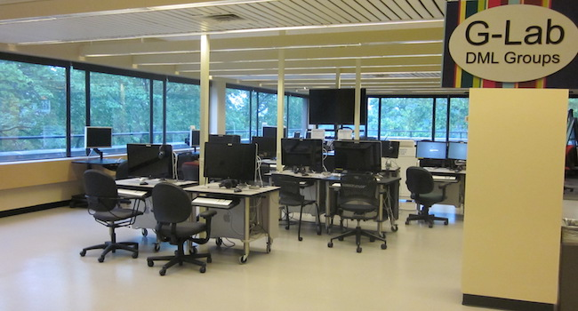

Robertson Media Center

The Robertson Media Center (RMC) is located on the third floor of Clemons Library and is adjacent to the Digital Media Lab. The Center offers digital media services, including digital audio/video/3D capture and editing, desktop publishing and technical instruction, and analog and digital media collections and services, and provides expertise, equipment, and resources for the use and development of media materials in instruction and research. The Center has a variety of equipment available for circulation such as Flip Cams, tripods, Canon Vixia cameras, Bloggie cameras, Zoom cameras, Marantz audio recorders, USB microphones, USB optical drives, headphones, projectors, memory cards and readers, wired XLR microphones, wireless microphones, cassette audio player/recorder and a limited supply of display adapters. The equipment can not be reserved in advance and is circulated on a first-come, first-served basis from the third floor circulation desk. Equipment can not be renewed online. There are limited supplies of each type of equipment that is circulated. Equipment should be returned to the third floor desk. Library hours are available here. The computer stations in the Center can be reserved in advance for three hour blocks of time. You may check availability and make your reservation by clicking here. A consultant is on duty when the floor is open and is available to assist with questions that arise.
People

willRourk
Title: Cultural Heritage Informatics Specialist
Department: UVA Library - Scholars' Lab West (Clemons)
Fang Yi
Title: Educational Technologist
Department: Teaching and Learning Team at UVA Library